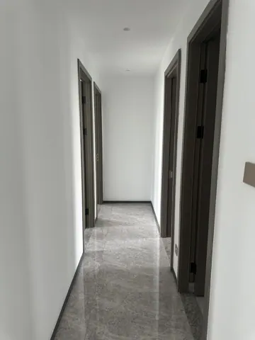
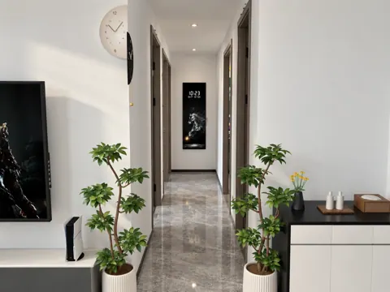
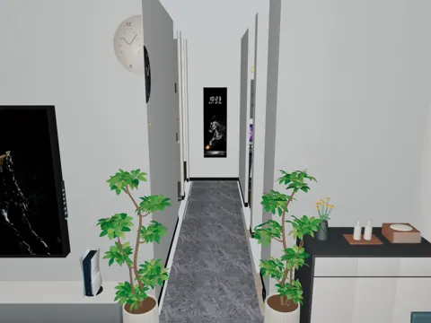

SPACE 11
11 连廊
现状、需求与预期效果，放在一起讨论。
11 连廊装修需求
所有尺寸均为参考；施工、定制、开孔和下单以现场实测、实物安装要求及确认图纸为准。列入配置不等于已经购买。
现场实拍


连廊（向西）
DESIGN INTENT
预期效果
仅展示需求文档中列出的效果图。


连廊向西


连廊向西
功能与布局
- 通行与使用：保持连廊通行顺畅，并为全身镜展开及照镜使用留出空间。
- 端景与全身镜：连廊尽头壁挂数显全身镜，闭合时展示装饰画及数显时钟，向右翻开后使用内部全身镜。
硬装与定制
- 镜体安装：固定位置和离地高度现场确认。
- 开启避让：核对镜体向右翻开的范围，确保不碰相邻墙面、门扇或家具。
家具与设备
“否”按成品选购；“待确认”不代表已决定定制。尺寸以现场实测及最终确认图纸为准。
商品图、规格图及购买链接均为选型参考，不限定购买渠道或最终款式。若有同款且性价比更高的选择、风格更合适的家具，或因现场尺寸、安装条件等客观原因需要调整，可提出替代方案，说明差异及更换原因，经业主确认同意后方可更换。
| 项目 | 数量 | 是否定制 | 参考尺寸 / 选型要求 | 商品图 / 规格参考 | 购买链接（参考） | 备注 |
|---|---|---|---|---|---|---|
| 数显全身镜 | 1 件 | 否 | 500 × 1500 mm；黑色窄框、右翻开启，白马画及数显时钟正面、内部全身镜；图示标识迈诗雅 | 实拍、规格 | 淘宝 | 按区域需求确认选型 |
| 连廊廊灯 | 待照明方案确认 | 否 | 尺寸、款式及灯具数量待选 | 待选 / 暂无资料 | 待软装确认 | 配合软装效果搭配；供电已纳入本区域基础照明，不重复计数 |


水电
用电设备
走廊暂按两段基础照明，兼顾转角、遮挡和镜前使用。
数显全身镜在镜后或镜旁预留一个供电位，接口按产品确认；机械翻开结构不额外计电。
插座、用电设备和开关统一列在下表；同一设备的供电只计一次。用电设备采用插座还是直接接线随最终选型确定，安装高度写在位置要求中；开关按面板位置计数，不按按键数计。数量包含暂定项，现有可复用位置现场核对。
| 类别 | 设备 / 用途 | 数量 | 位置 / 要求 | 状态 |
|---|---|---|---|---|
| 插座 | 数显全身镜 | 1 个 | 若改固定接线则从本表转移，不重复计点；无需有线网络 | 配置 |
| 用电设备 | 连廊 · 基础照明 | 2 组 | 暂分两段照明，核对转角、遮挡和镜前使用效果。 | 暂定 |
| 开关 | 连廊 · 照明开关 | 1 处 | 具体位置待定位 | 数量已由业主确认 |
汇总：插座 1 个，另需供电的设备 2 项，照明开关 1 处。 用电设备后续即使采用插座供电，也不再重复增加同一项需求。
用水设备
当前未提出固定上水、下水接管需求；如设备选型新增接管要求，再补列对应设备及接口。
待确认事项
| 区域 / 专项 | 待确认内容 | 对设计及报价的影响 |
|---|---|---|
| 待补充 | 按现场复尺及选型结果补充 | 待确认 |
灵感与风格参考
无。